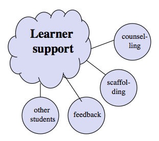

6.6 Apoio ao aprendiz
{kind=link}


6.6.1 O apoio ao aprendiz no âmbito de um ambiente de aprendizagem
O apoio ao aprendiz foca nas formas de assistência aos estudantes além da transmissão de conteúdos, do desenvolvimento de competências ou da avaliação formal. O apoio ao aprendiz abrange uma vasta gama de funções e é discutido ao longo do livro, mas particularmente no:
Brindley et al. (2004) apresentam uma visão abrangente de toda a gama de atividades de apoio ao aprendiz no ensino on-line e a distância. Aqui, contudo, o meu foco limita-se a indicar por que razão constitui um elemento essencial de um ambiente de aprendizagem eficaz e a descrever brevemente alguns dos principais subcomponentes do apoio ao aprendiz.
6.6.2 Andaime (Scaffolding)


Utilizo o termo "andaime" (scaffolding) para cobrir as muitas funções de diagnóstico e resposta às dificuldades dos aprendizes, incluindo:
- ajudar os estudantes quando se deparam com novos conceitos ou ideias;
- ajudar os estudantes a obter uma compreensão mais profunda de um tema ou matéria;
- ajudar os estudantes a avaliar uma variedade de ideias ou práticas diferentes;
- ajudar os estudantes a compreender os limites do conhecimento;
- acima de tudo, desafiar os estudantes a irem além do seu nível atual de reflexão ou prática para adquirirem uma compreensão mais profunda ou um nível de competência mais elevado.
Estas atividades assumem normalmente a forma de intervenções pessoais e de comunicação entre um professor e um estudante individual ou um grupo de estudantes, em contextos presenciais ou on-line. Estas atividades tendem a não ser pré-planejadas, exigindo uma boa dose de espontaneidade e capacidade de resposta por parte do professor.
No entanto, mais recentemente surgiram exemplos de apoio automatizado ao aprendiz, tais como assistentes virtuais ou chatbots (para uma revisão da pesquisa sobre chatbots na educação, ver Winkler e Söllner, 2018). Além disso, a análise de aprendizagem tem sido utilizada para determinar o desempenho de um estudante e, sempre que necessário, direcioná-lo para leituras ou trabalhos complementares (ver, por exemplo, Vesin et al., 2018).
O scaffolding constitui habitualmente um meio de personalizar a aprendizagem, permitindo acomodar melhor as diferenças dos estudantes na aprendizagem à medida que estas ocorrem.
6.6.3 Feedback
Este poderia ser visto como um subcomponente do scaffolding, mas cobre a função de fornecer feedback sobre o desempenho dos estudantes em atividades como trabalhos escritos, projetos, atividades criativas e outras tarefas que ultrapassam o alcance atual e talvez futuro do feedback informático automatizado. Mais uma vez, o papel do professor aqui consiste em fornecer uma maior personalização do feedback para lidar com atividades dos estudantes avaliadas qualitativamente, podendo ou não estar associado à avaliação formal ou classificação.
6.6.4 Aconselhamento (Counselling)
Além do apoio direto no âmbito dos seus estudos acadêmicos, os aprendizes necessitam frequentemente de ajuda e orientação em questões administrativas ou pessoais, tais como dificuldades financeiras, ou sobre se devem repetir uma disciplina, adiar um trabalho devido a doença na família, ou cancelar a matrícula em uma disciplina e adiá-la para outra data. Embora tais serviços possam estar disponíveis fora da oferta de uma disciplina específica, esta fonte potencial de ajuda precisa de ser considerada no planejamento de um ambiente de aprendizagem eficaz, com o objetivo de fazer tudo o que for possível para garantir que os estudantes consigam gerir as pressões externas ao mesmo tempo que cumprem os padrões acadêmicos de um programa.
6.6.5 Outros estudantes
Os restantes estudantes podem constituir um grande apoio para os aprendizes. Grande parte disso acontecerá informalmente, através de conversas após as aulas, através das mídias sociais ou ajudando-se mutuamente nos trabalhos. No entanto, os professores podem fazer uma utilização mais formal dos outros estudantes através do planejamento de atividades de aprendizagem colaborativa, trabalho em grupo e debates on-line, de modo a que os estudantes precisem trabalhar em conjunto e não individualmente.
6.6.6 Por que razão o apoio ao aprendiz é tão importante
Veremos no Capítulo 12 que um bom planejamento do ensino pode reduzir substancialmente a procura de apoio ao aprendiz, garantindo a clareza e integrando atividades de aprendizagem adequadas. Os estudantes também variam enormemente na sua necessidade de apoio na aprendizagem. Muitos aprendizes ao longo da vida, que já passaram pelo ensino pós-secundário, têm famílias, carreiras e uma grande experiência de vida, conseguem ser aprendizes autônomos e autogeridos, identificando o que necessitam de aprender e qual a melhor forma de o fazer. No outro extremo, existem estudantes para quem o sistema escolar formal foi um desastre, que carecem de competências ou bases de aprendizagem essenciais, tais como competências de leitura, escrita e matemática, e que, por conseguinte, carecem de confiança na aprendizagem. Estes necessitarão de muito apoio para obter sucesso.
No entanto, a grande maioria dos aprendizes situa-se no meio deste espectro, deparando-se ocasionalmente com problemas, sem clareza sobre quais os padrões exigidos e necessitando de saber como está evoluindo nos estudos. De fato, existe um volume significativo de pesquisas que indica que a "presença do professor" está associada ao sucesso ou fracasso dos estudantes em uma disciplina, pelo menos no ensino on-line (ver, por exemplo, Shea et al., 2010). Sempre que os estudantes sentem que o professor não está presente, tanto o desempenho dos alunos como as taxas de conclusão diminuem. Para estes estudantes, um apoio de qualidade e oportuno representa a diferença entre o sucesso e o fracasso.
Cumpre notar que a necessidade de um bom apoio ao aprendiz, e a capacidade de o fornecer, não depende do meio de ensino. O tipo de disciplinas on-line valendo créditos que foram planejadas e ministradas muito antes do surgimento dos MOOCs oferecia frequentemente níveis elevados de apoio ao aprendiz, graças a uma forte presença do professor e a um planejamento cuidadoso para garantir o suporte aos estudantes.
Ao mesmo tempo, embora os programas de computador possam contribuir de alguma forma para fornecer apoio ao aprendiz, muitas das funções mais importantes do apoio ao aprendiz associadas à aprendizagem conceitual de alto nível e ao desenvolvimento de competências necessitam ainda de ser asseguradas por um professor especialista, quer presencialmente quer à distância. Além disso, este tipo de apoio ao aprendiz é difícil de escalar, pois tende a ser relativamente intensivo em termos de trabalho e exige professores com um nível profundo de conhecimento na área de estudo. Assim, a necessidade de fornecer níveis adequados de apoio ao aprendiz não pode simplesmente ser ignorada, se quisermos obter uma aprendizagem bem-sucedida em grande escala.
Isto pode parecer óbvio para os professores, mas a importância do apoio ao aprendiz para o sucesso dos estudantes nem sempre é reconhecida ou apreciada, como se pode verificar pelo design de muitos MOOCs e pela reação dos políticos e das mídias às poupanças de custos prometidas pelo tipo de MOOCs que se focam na eliminação do apoio ao aprendiz. Existem também diferentes atitudes por parte dos professores e das instituições em relação à necessidade de apoio ao aprendiz. Alguns docentes podem considerar que "o meu trabalho consiste em instruir e o seu em aprender"; em outras palavras, uma vez apresentado aos estudantes o conteúdo necessário através de aulas expositivas ou de leituras, o resto cabe a eles.
No entanto, a realidade é que, em qualquer sistema com uma grande diversidade de estudantes, como é tão comum hoje em dia, um apoio eficaz ao aprendiz é essencial para o sucesso dos estudantes.
Referências
Brindley, J., Walti, C. and Zawacki-Richter, O. (eds.) (2004) Learner Support in Open, Distance and Online Learning Environments Oldenburg, Germany: Biblioteks- und informationssystem der Universität Oldenburg
Shea, P. et al. (2010) Online Instructional Effort Measured through the Lens of Teaching Presence in the Community of Inquiry Framework: A Re-Examination of Measures and Approach International Review of Research in Open and Distributed Learning, Vol. 11, No. 3
Vesin, B. at al. (2018) Learning in smart environments: user-centered design and analytics of an adaptive learning system Smart Learning Environments, Vol. 5, No. 24
Winkler, R. & Söllner, M. (2018): Unleashing the Potential of Chatbots in Education: A State-Of-The-Art Analysis. Academy of Management Annual Meeting (AOM) Chicago: Illinois
Atividade 6.6 Construindo o apoio ao aprendiz
- Você considera que é possível projetar uma disciplina ou programa eficaz sem a necessidade de níveis elevados de apoio ao aprendiz? Se sim, o que pareceria? Um desenvolvimento dos MOOCs ou algo completamente diferente?
- Você partilha da minha visão sobre as limitações dos computadores para fornecer o tipo de apoio ao aprendiz de alto nível necessário para a aprendizagem conceitual na era digital? O que os computadores ou a IA fazem bem em termos de apoio aos aprendizes?
- "Andaime" (scaffolding) é o melhor termo para descrever o tipo de apoio à aprendizagem que descrevi nessa seção? Se não, existe um termo melhor para isso?
Para o meu feedback sobre estas questões, clique no podcast abaixo:
Um elemento de áudio foi excluído desta versão do texto. Você pode ouvi-lo on-line aqui: https://pressbooks.bccampus.ca/teachinginadigitalagev2/?p=374